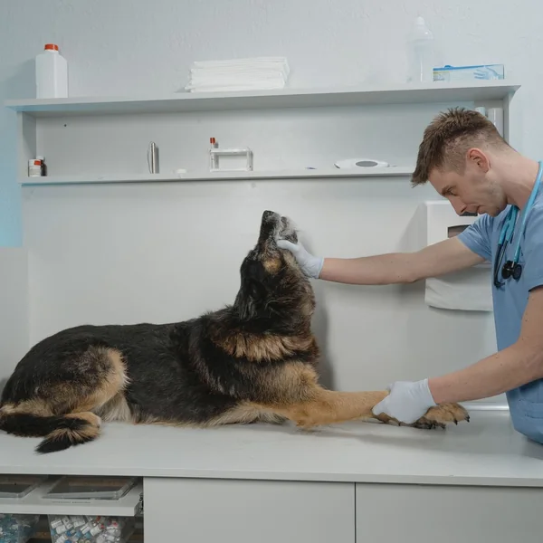
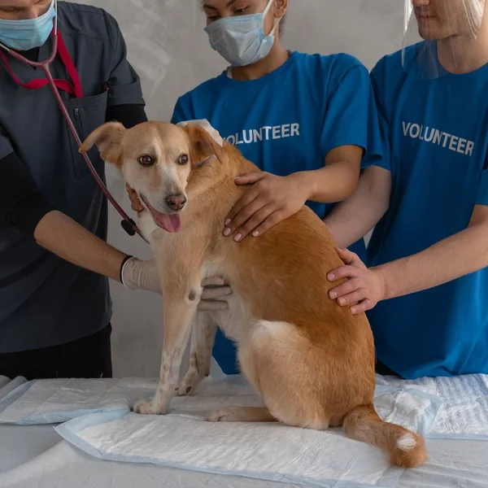
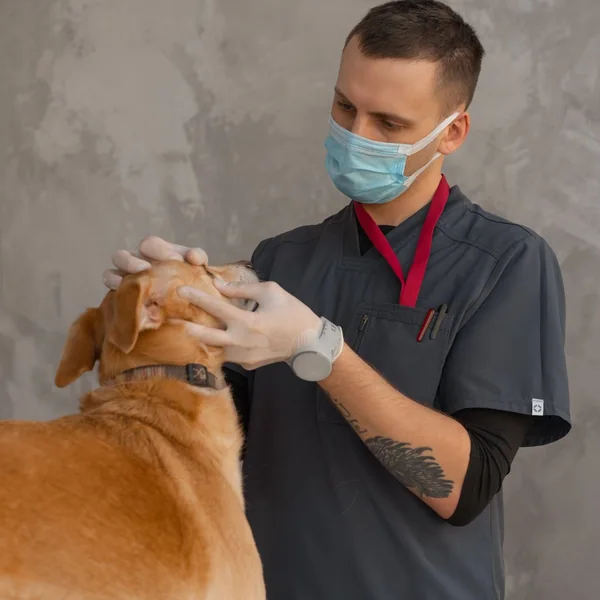
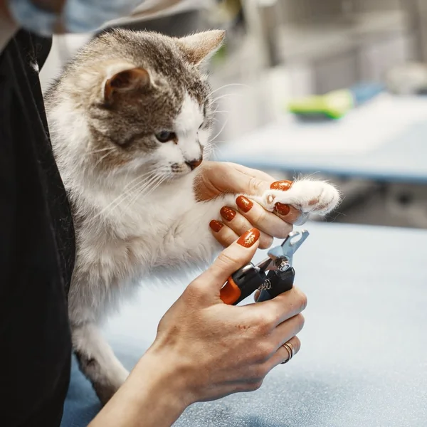
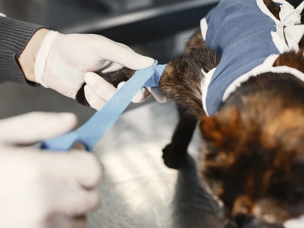
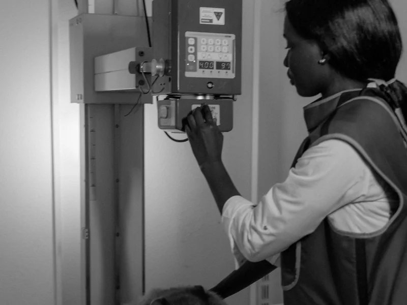

Master Practical Veterinary Skills & Clinical Confidence
Go from classroom theory to real clinical confidence. Learn surgery, diagnostics and emergency care hands-on, with senior vets in Pune.

1-on-1 Surgical Ergonomics & Tactile Mastery



Who Are You Learning As?
Pick your role. We’ll show you the programs and level that fit you best.
Fresh Vets & Interns
Turn college learning into real clinical skills. Practise surgery, X-ray and emergency care before your first job.
Explore Foundation ProgramsPractising Veterinarians
Handle everyday cases with more confidence. Sharpen your surgery, X-ray reading and emergency skills.
Explore Intermediate Programs
Specialists & Experienced Vets
Take on complex cases and grow your practice. Advanced training in surgery, orthopaedics and ultrasound.
Explore Advanced Programs
Pet Owners & Rescuers
Know what to do in a pet emergency. Simple, hands-on workshops on first aid, choking, CPR and safe handling.
Join Pet First Aid WorkshopFind Your Program in 3 Steps
Tell us who you are and what you want to learn to discover the right VetNova training programs.
Choose the right practical veterinary program.
Explore hands-on certification programs designed for veterinary students, fresh graduates, clinicians, and animal care professionals.
 Surgery
Surgery
 Radiology
Radiology
 Emergency
Emergency

SurgerySmall Animal Orthopaedics
Hands-on orthopaedic surgery training covering bone fracture stabilization, dynamic compression plating, intramedullary pinning, and joint injury repairs in small animals.
- Orthopaedic bone plating & pin fixation wet-lab
- Post-op radiograph assessment & fracture alignment


Not sure which course is right for you?
Our academic counsellors will recommend the best learning path based on your background and clinical goals.
Practical Training Batches
Explore upcoming intakes and connect with us about ongoing practical training programs.
Loading training batch schedules...
Looking to enquire about active workshop observer seats or custom scheduling? Contact Us